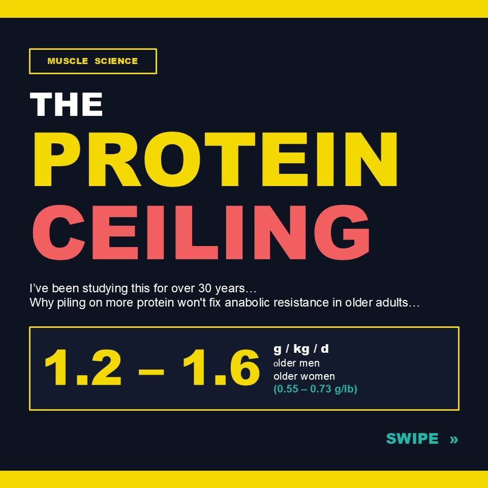
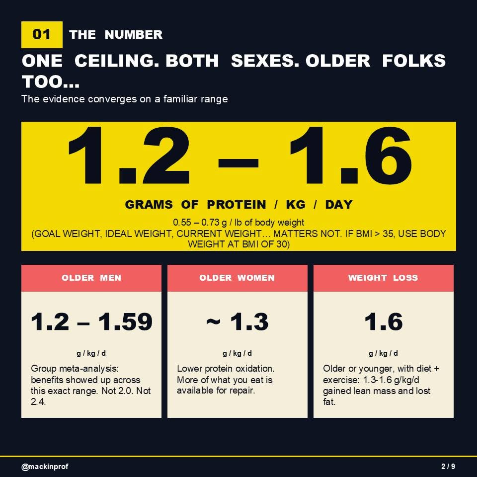
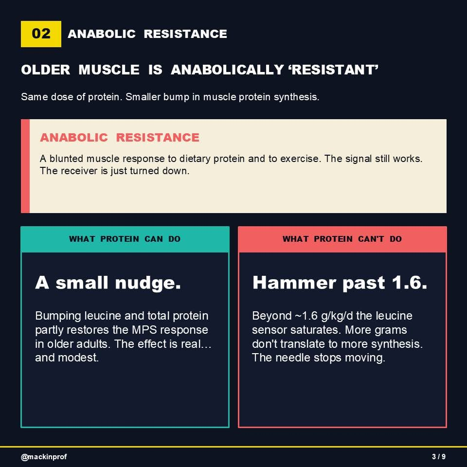
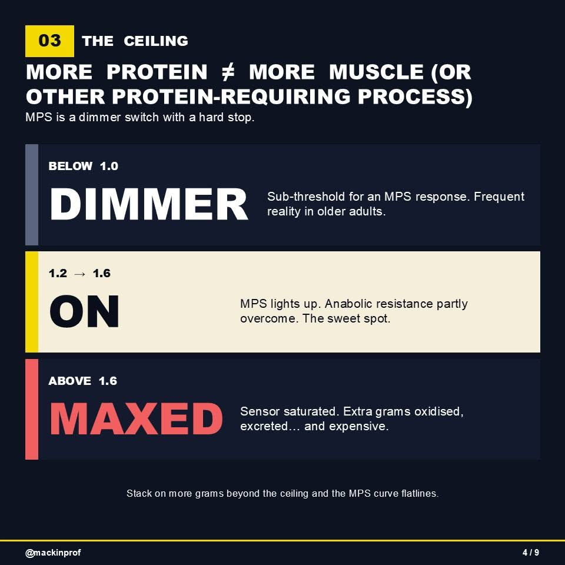
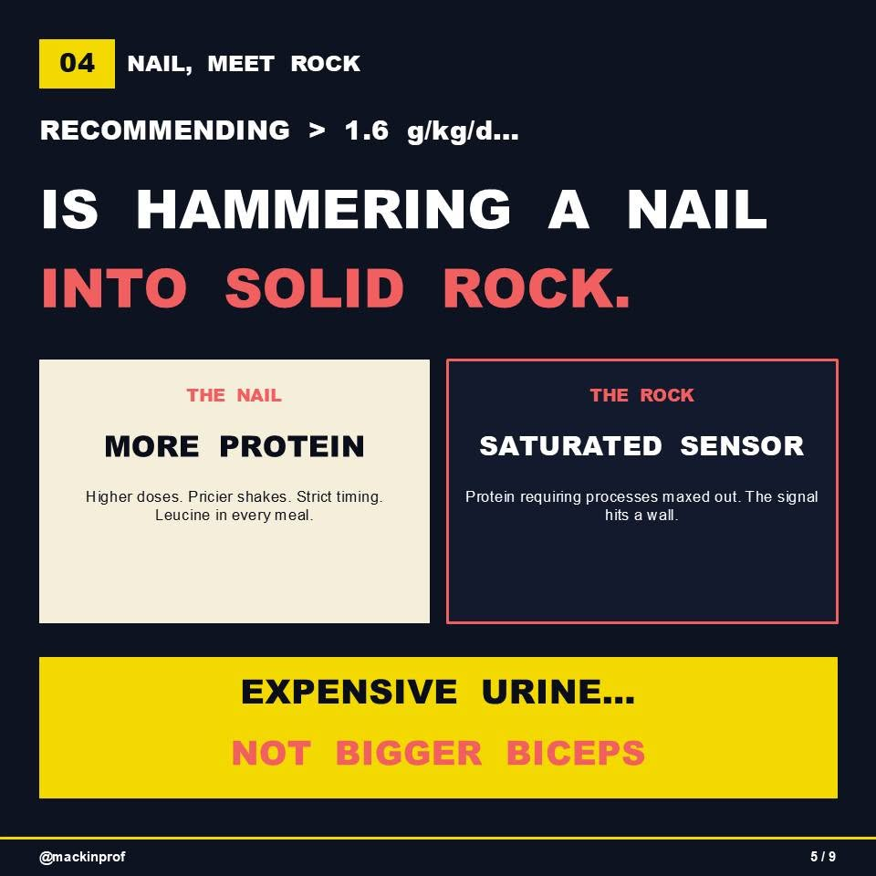

Even the elderly see NO benefit whatsoever from protein intake above 1.6g/kg when combined with strength training.
This 1.6g/kg number is a hard limit in both young people and old people who are doing resistance training.
“When you see someone insisting older adults need 2.0, 2.4, or more, ask yourself why. Bigger numbers make for louder content.” —Stuart Phillips.
(For reference, 1g/lb is 2.2g/kg.)
As Stuart Phillips explains in the post below, 85-90% of the muscle-building benefit in the elderly comes from resistance training itself, with high protein intake of 1.6g/kg adding only an incremental 10-15% above the RDA of 0.8g/kg. Most of this incremental benefit in the elderly is actually achieved at around 1.2-1.3g/kg, especially in women. To achieve this incremental benefit, the extra protein must be combined with resistance training, otherwise the benefit is zero.
“Exercise BAKES THE CAKE. Protein is the (very thin) icing. Stop piling on more (and more) protein hoping to thicken the icing. The cake doesn't get bigger. The icing just slides off the side.” —Stuart Phillips
#proteinHD #proteinsummaryHD #elderlyHD #stuartphillipsHD #resistancetrainingHD
MORE PROTEIN IN AGING: Same message, it helps, but there's a limit!
The 1.6 g/kg/d ceiling holds in older adults too. And in women. Possibly a touch lower in women, actually.
Here's what the evidence says:
Older adults: benefits show up across 1.2 to 1.59 g/kg/d (Nunes et al., J Cachexia Sarcopenia Muscle 2022).
Older men averaging 72 y: bumping intake from 0.8 to 1.3 g/kg/d boosted integrated muscle protein synthesis by about 9% (McKendry et al., AJCN 2024).
Women losing weight: 1.3 g/kg/d gained 0.7 kg of lean mass and lost more fat over 16 weeks of diet plus exercise (Josse et al., J Nutr 2011). Not 1.6. Not 2.0. Just 1.3.
Anabolic resistance is real. Older muscle is harder of hearing, and a bit more protein (and leucine) does partly restore the response. But it is a small nudge, not a thunderclap. And the nudge has a ceiling.
Recommend above 1.6 g/kg/d and you are hammering a nail into solid rock. The leucine sensor is saturated. mTORC1 has nothing left to give.
When you see someone insisting older adults need 2.0, 2.4, or more, ask yourself why. Bigger numbers make for louder content. The bag of whey behind the camera tends to scale with the recommendation. Convictions feel evidence-shaped. They aren't. "Optimisation" stories are not RCT data.
The actual lever for anabolic resistance? Loading. Lifting. Moving. Resistance training restores muscle's sensitivity to protein, lowers the dose threshold, and keeps sensitivity elevated for 24 to 48 hours after a session. Roughly 85 to 90% of the result comes from training, 10 to 15% from nutrition. Reverse that ratio and you're optimising the wrong variable.
Exercise BAKES THE CAKE. Protein is the (very thin) icing. Stop piling on more (and more) protein hoping to thicken the icing. The cake doesn't get bigger. The icing just slides off the side.
P.S. The thermic effect of protein and the satiety bump are real, but they are also bounded.
Land somewhere between 1.2 and 1.6 g/kg/d of current body weight, spread it across the day, and put the energy you were spending obsessing about grams into your next set.
This one's for you @cheryl.c.coulombe 😉




